Efficient learning
Parameter-efficient adaptation, expert fusion, and policy distillation for transferring knowledge into capable models with practical training costs.
Post-training · PEFT · DistillationPh.D. candidate · Shanghai Jiao Tong University
Efficient learning. Multimodal reasoning.
I am a Ph.D. candidate at Shanghai Jiao Tong University. My research focuses on efficient post-training, reasoning, and evaluation of multimodal large language models.
I work on helping models learn with fewer resources, use visual evidence more faithfully, and demonstrate their capabilities through carefully designed benchmarks.
Parameter-efficient adaptation, expert fusion, and policy distillation for transferring knowledge into capable models with practical training costs.
Post-training · PEFT · DistillationInference methods that keep generated answers grounded in visual evidence and reduce hallucinations in complex multimodal tasks.
Visual grounding · Decoding · Reward modelsBenchmarks and datasets that reveal what models understand, how they reason, and where their visual and scientific capabilities fall short.
Scientific reasoning · Benchmarks · Data* Equal contribution. Preprints are labeled separately from published papers.
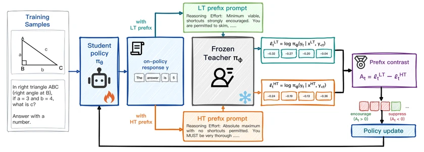
Contrasts low- and high-effort teacher distributions to train multimodal models toward concise, efficient reasoning.
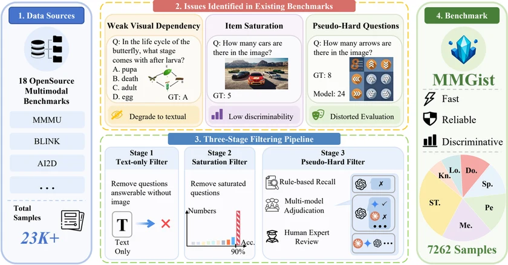
Curates 7,262 visually grounded, discriminative questions from 18 benchmarks for reliable multimodal evaluation.
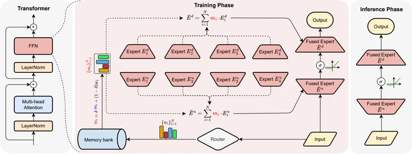
Uses multiple experts during training and fuses them into a dense Transformer with no extra inference architecture.
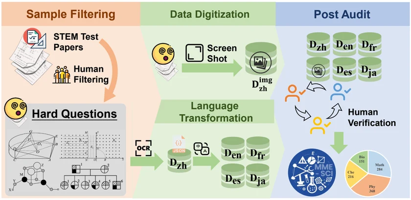
Evaluates scientific reasoning across four subjects, five languages, and three input modes with 1,019 annotated questions.
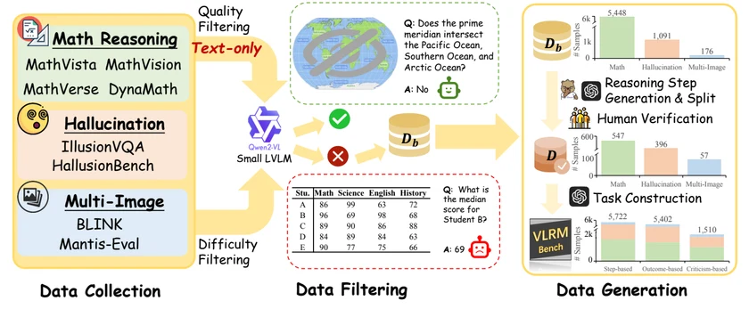
Tests vision-language reward models on process understanding, outcome judgment, and critique generation across 12 tasks.
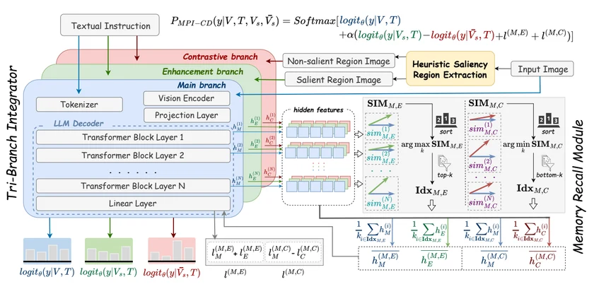
Combines contrastive visual branches and hidden-layer memory recall to reduce hallucinations without extra training.
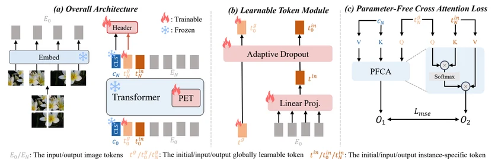
Regularizes parameter-efficient tuning with two learnable tokens to reduce overfitting on limited downstream data.
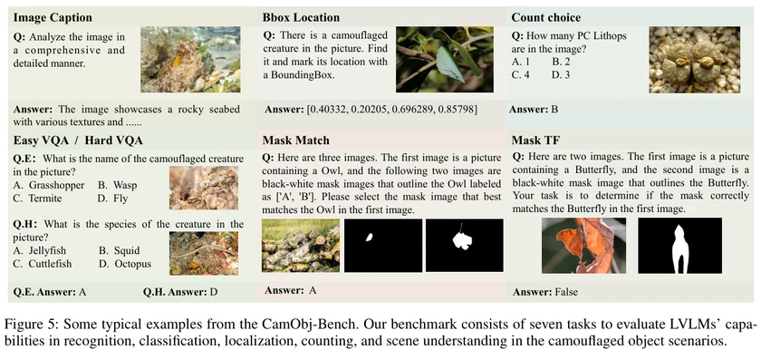
Builds a multimodal dataset and evaluation suite for understanding camouflaged objects in challenging visual scenes.
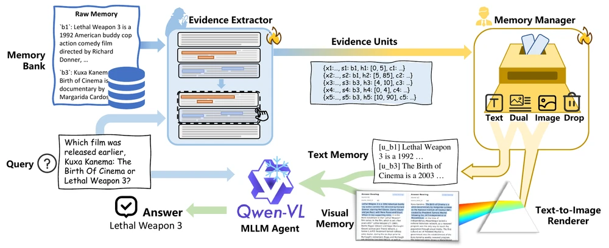
Selects and organizes textual and visual evidence to support long-horizon agents under a memory budget.
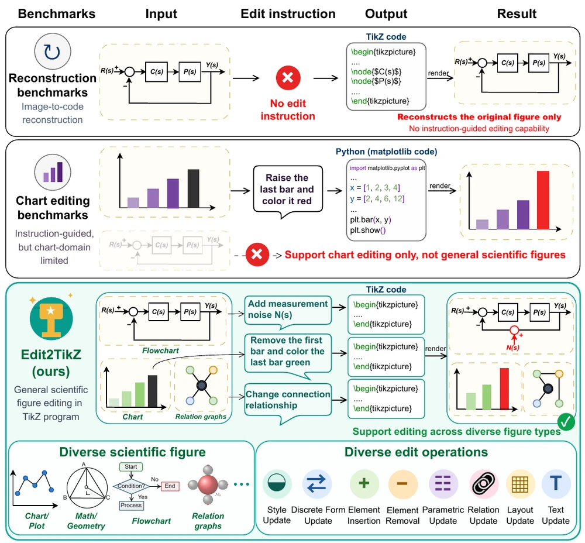
Benchmarks instruction-guided scientific figure editing through compilable TikZ code on 1,548 annotated samples.
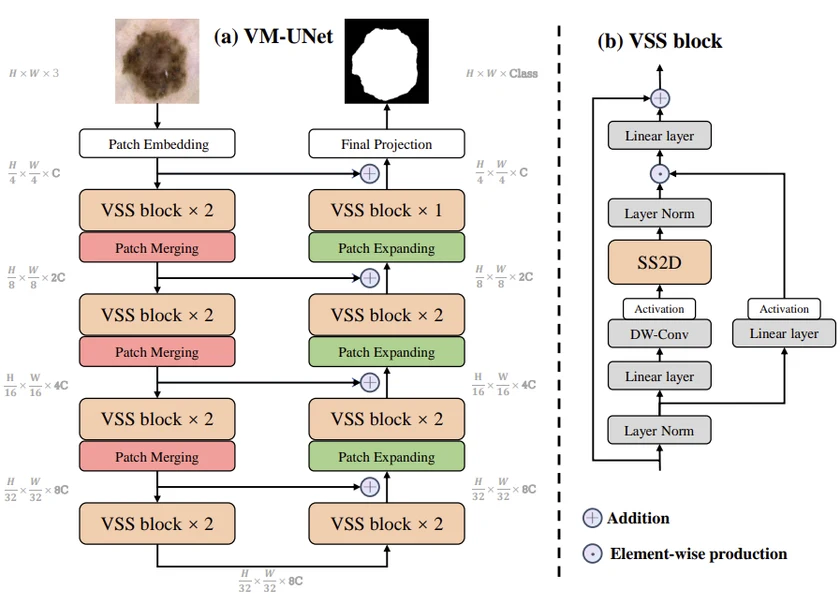
Uses visual state-space models in a U-Net architecture for medical image segmentation.
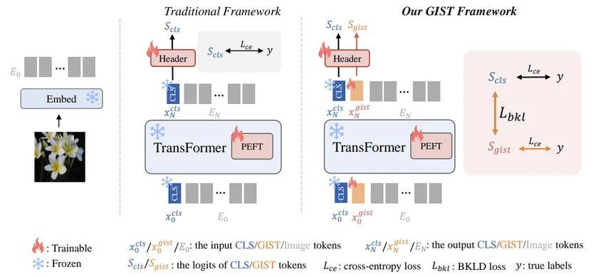
Improves parameter-efficient adaptation through interaction between pretrained and downstream knowledge.
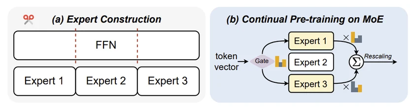
Builds sparse mixture-of-experts models from dense LLaMA checkpoints with continual pretraining.
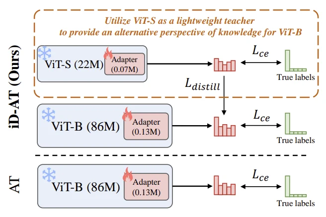
Transfers knowledge from an auxiliary model to improve adapter tuning.
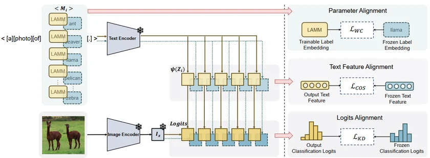
Learns label representations to improve alignment in multimodal prompt learning.
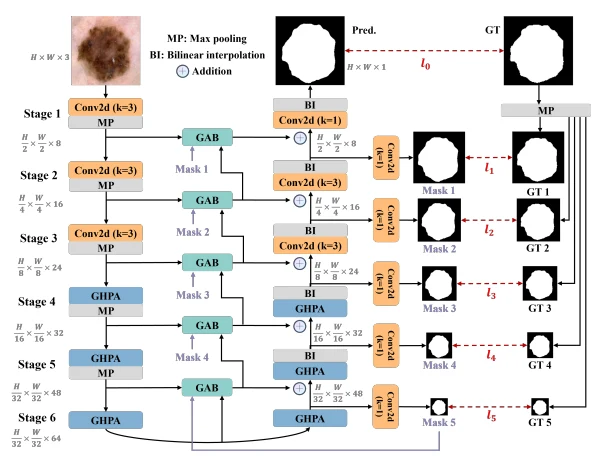
Combines group-enhanced feature aggregation with a lightweight architecture for skin lesion segmentation.
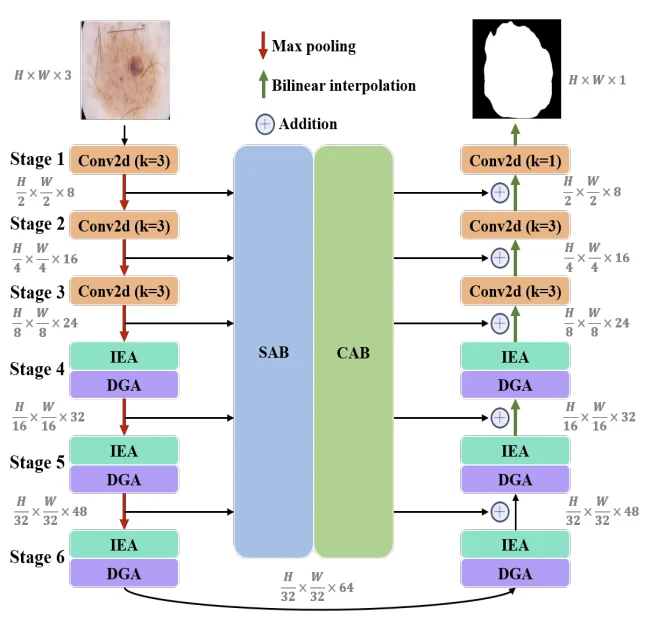
Uses lightweight multi-attention modules for efficient skin lesion segmentation.
Post-training of multimodal large language models.
Foundation models for video safety moderation and risk-frame selection.
Multimodal understanding and multimodal reward models.
Multimodal large language models for camouflaged object scenarios.
Mixture-of-Experts architectures and efficient Transformer pre-training.
Ph.D. candidate in Computer Science and Technology
Wu Wenjun AI Honors Ph.D. Class
Bachelor’s degree · School of Microelectronics
Outstanding Graduate of Shaanxi Province
Integrated Circuit Design Practice in Microelectronics
Integrated Hardware Practice in Artificial Intelligence
ICLR 2025–2027 · NeurIPS 2024–2025 · ICML 2025 · AAAI 2026 · AISTATS 2026 · ECCV 2026 · ICCV 2025 · ACM MM 2024–2026 · ACL ARR 2025 · MICCAI 2023–2025 · ICASSP 2023–2025 · ICME 2024
IEEE TMI · IEEE TNNLS · IEEE TIP · IEEE TCSVT · IEEE JBHI · IJCV · Neurocomputing · Expert Systems with Applications · Engineering Applications of Artificial Intelligence
IJCNN 2024 · Technical Program Committee
I collaborate with Suncheng Xiang, Mingye Xie, and Jingsheng Gao at SJTU. My research experiences have also included working with Yu Cheng and Xiaoye Qu at Shanghai AI Laboratory, Zhiyu Li at the Institute for Advanced Algorithms Research, Ye Guo at Xiaohongshu, and De Cai, Fubang Zhao, and Yangyang Kang at ByteDance.
Outside research, I enjoy swimming, bodyweight training, music, and playing the guitar.